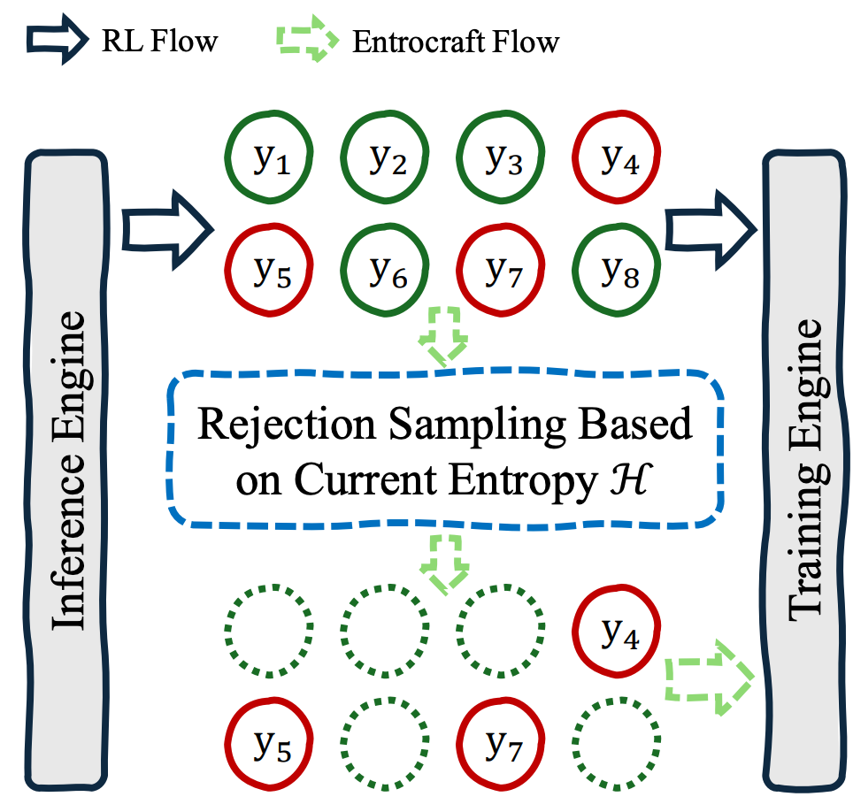

Preprint

Addressing Performance Saturation for LLM RL via Precise Entropy Curve Control
TL;DR: We propose Entrocraft, a rejection-sampling method that precisely controls entropy schedules during LLM reinforcement learning, alleviating performance saturation while improving generalization, output diversity, and long-term training.
Preprint, 2026